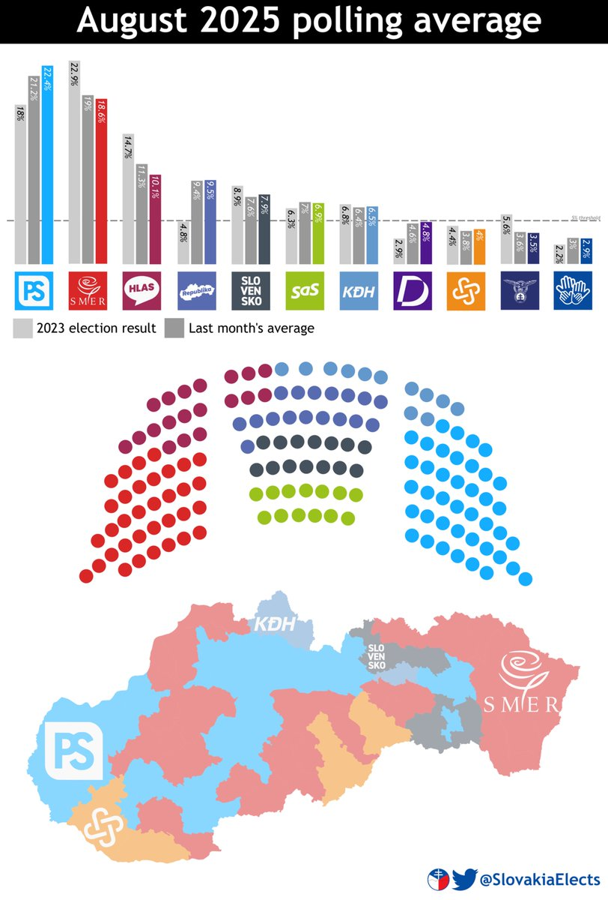

𝐀𝐬𝐡𝐥𝐞𝐲 𝐁𝐥𝐨𝐜𝐤🍥🌹🇹🇼🏳️⚧️
@bolckAshley
#Slovak 🇸🇰🇸🇰🇸🇰
「進步斯洛伐克」(PS)在8月份的民調調查中領先，或許有望超越方向黨(Smer)成為第一大黨
小知識：與其他東歐國家相似，斯洛伐克的「中左翼政黨」——方向黨跟聲音黨(HLAS)都是強民族主義傾向的社會保守主義政黨，二者都因跟斯洛伐克的極右翼政黨「民族黨」合作而被PES中止成員資格。

Slovakia Elects
@SlovakiaElects
Slovak August 2025 opinion poll average:
% | seats
PS — 22.4 | 41
Smer — 18.6 | 34
Hlas — 10.1 | 19
Republika — 9.5 | 17
Slovensko — 7.9 | 14
SaS — 6.9 | 13
KDH — 6.5 | 12
——5% THRESHOLD——
Demokrati — 4.8
Aliancia — 4
SNS — 3.5
SR — 2.9 https://t.co/X0otoyD62S